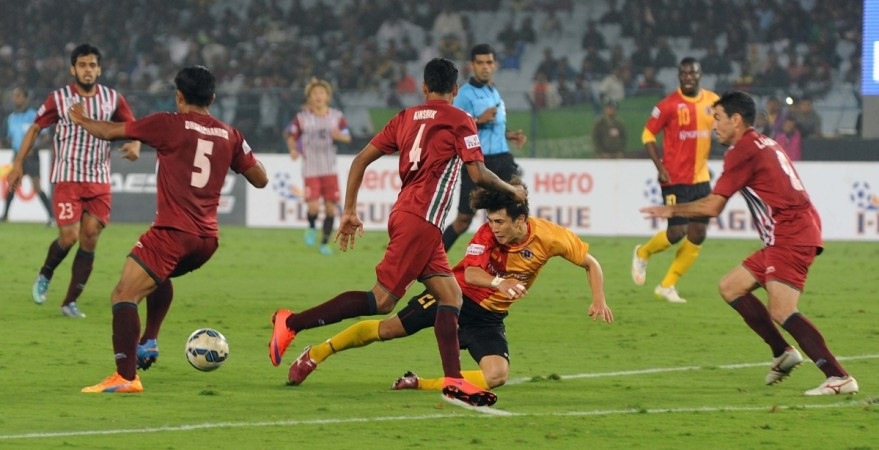
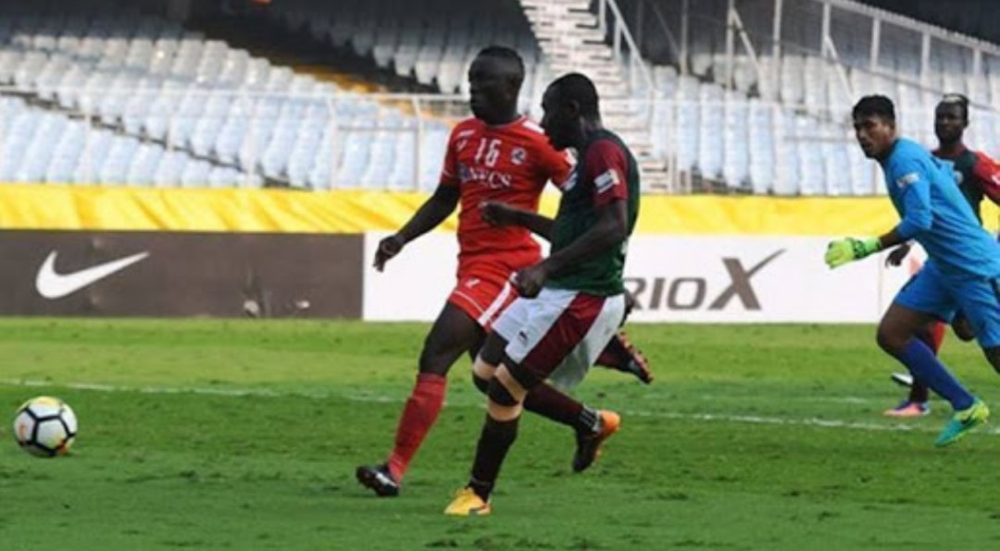
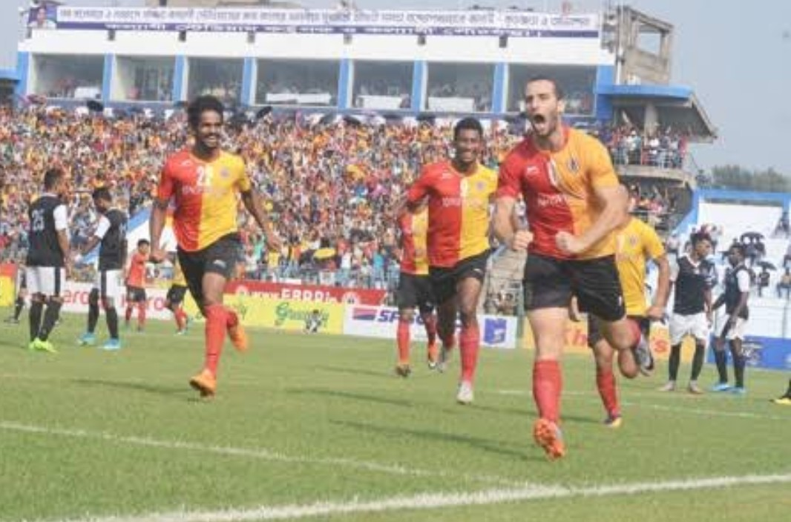

Posted at Date: September 02, 2018
Written by : Esha Das
Calcutta Football League (CFL) 2018 score
settles down with a draw 2-2.
East Bengal staged a brilliant comeback as they reinstated a 2-2 draw against Mohan Bagan in the Calcutta Football League (CFL) clash today on Sunday.
The first Kolkata Derby - the biggest match in Indian football - of the 2018-19 season ended with honours even at the Yuva Bharati Krirangan aka Salt Lake Stadium.
Mohun Bagan and East Bengal were locked at the top of the table in the Calcutta Football League with 19 points before the match.

Mohun Bagan uprise
The match, witnessed by a huge crowd at the Yuva Bharati Krirangan, both teams attacking mood at the start. Johnny Acosta was the leader of East Bengal's defense and helped Al Amna in constructing the attacks too. Acosta, who has played for Costa Rica in the FIFA World Cup, was also their main man during set-piece attcks in the opponent's box. However, it was Mohun Bagan who surged ahead with some great moves on counter attacks. They got a chance to score early with a freekick in a promising position - but East Bengal goalkeeper Rakshit Dagar denied Henry Kisseka with an incredible diving save. The team in Maroon and Green brigade got their first goal when Pintu Mahata met a cross from right-back Arijit Bagui in the East Bengal box and slotted it low past Dagar into the goal. It was Arijit Bagui again who created the second goal for Mohun Bagan with another great cross. The ball found its way to Kisseka who smashed it into the left bottom corner to make it 2-0.

East Bengal fight's back
Mohun Bagan did not allow many chances to East Bengal in the first half. However, some good luck for EB and a defending error by MB, allowed Jhonny Acosta to score on his debut. Shilton failed to cleanly catch a shot on target and the ball bounced off Acosta to go in the net. The goal came in the added time in the first half. East Bengal were more positive in the second half with The Red and Golds attacking with freedom. They were rewarded for this just after the hour mark when Laldanmawia Ralte put them level from a corner. The two sides then tried hard to break the deadlock but settled for a 2-2 draw in the end. East Bengal has won the Calcutta Football League title 39 times while Mohun Bagan has lifted the trophy 29 times. The match lived up to its expectation as both teams gave their best on the field, but it seemed Mohan Bagan had done their homework well. Currently, Mohan Bagan is at the top of the points table as East Bengal is at the second spot. Lineups are – East Bengal : Dagar (GK), Samas Ali, Mehtab Singh, Acosta, Lalramchullova, Laldanmawia, Kamalpreet, Aidara, Kassim, Brandon, Md. Al-Amna, Jobby Justin. Mohun Bagan : Shilton Paul (GK), Arijit Bagui, Kingsley, Lalchawnkima, Ambekar, Britto, Pintu, Sourav Das, Shilton de Silva, Dipanda, Henry.

Top Stories

Calcutta Sports Journalists' Club requests the pleasure of your company at its annual awards functionMore...

Jasprit Bumrah has been declared fit and he will now be available for selection for India's third Test against England at Trent Bridge. More...

Ronaldo has increased Juventus' standing among Europe's elite. More...